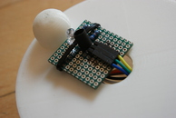
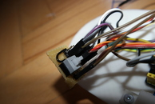
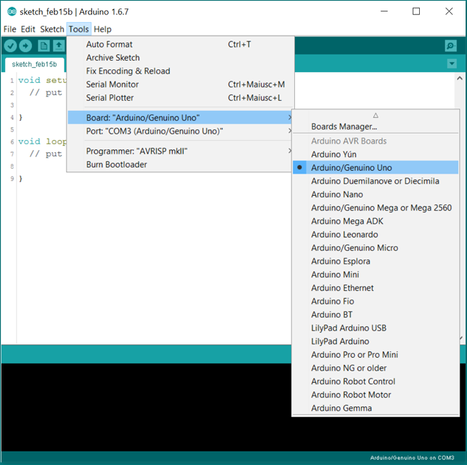

Documentation
Content:
With this tutorial you can do it!
What do you need:
1X Keystudio UNO r32X Continous servo FS90R2X Servo wheel1X Infrared sensor (for object detection)2X Prototyping PCBs1X 3.7V Battery1X Step up circuit (3.7V to 5V)1X LED1X Resistor 150kΩ1X Resistor 1kΩ1X Phototransistor1X ButtonSome male pins Some cables Some M3 screws 3D printer
That is all
Hardware
First of all, we need to make sensor, this line follower is only with one line sensor, for sensor we need one prototyping PCB, LED, three male pins, soldering iron, Phototransistor and both resistors, 150kΩ and 1kΩ.
{kind=link}

Second thing you need to do is to setup connection, so line sensor is going to GND, OUT to Analog pin 0 on ADRUINO and VCC to 3.3V on ARDUINO. Then you need to connect rest of components.
Calibration pin will be connected to a button on the next PCB where will be connected all VCC(5V) and GND. For this you will need soldering iron, 15 male pins, button and cables to connect everything together.
{kind=link}
Now when everything is connected, only thing you need to do is to make 3D printed base and servo holders. You can download this parts by clicking on button below.
If you have printed it, then you need to put it all together, you can see how it have to look like in pictures section.
Software
If you were doing something with arduino then you can skip right to programming section here if not yet, then start right now with Arduino IDE installation.
If you have installed it, then you need to set your board to arduino genuino/uno
{kind=link}
Now everythig is done, you only need to upload the programm to your line follower robot.
Programming
First of all we need to import libraries and define some values, that we will need at all of our programm:
- #include
- #include
- Servo s1;
- Servo s2;
- #define senzor A0
- #define IR 3
- int x = 100; //number of measurments
- String color;
Now, here is calibration function, that will calibrate your line follower robot, if it is on calibration mode, you need only to place it on line, and it will do everything without you, if we are not in calibration mode, this will be skiped and robot will continoue with his values saved in EEPROM memory.
- void calibration()
- int blackMeasured = 0;
- int whiteMeasured = 0;
- for (int k = 0; k < x; k++) {
- blackMeasured += analogRead(senzor);
- delay(10);
- }
- EEPROM.write(0, 0);
- EEPROM.write(0, map((blackMeasured / x), 0, 1023, 0, 255)); //black
- right();
- delay(400);
- stop();
- for (int j = 0; j < x; j++) {
- whiteMeasured += analogRead(senzor);
- delay(10);
- }
- EEPROM.write(1, 0);
- EEPROM.write(1, map((whiteMeasured / x), 0, 1023, 0, 255)); //white
- Serial.println(EEPROM.read(1));
- Serial.println(EEPROM.read(0));
- EEPROM.write(2, (EEPROM.read(1) + EEPROM.read(0)) / 2);
- Serial.println(EEPROM.read(2));
- delay(1000);
- }
So, now we are going to programm some motion functions for our follower:
- void forward() {
- s1.write(0); // forward
- s2.write(180); // forward
- }
- void right () {
- s1.write(90); // stopped
- s2.write(180); // forward
- }
- void left() {
- s1.write(0); // forward
- s2.write(90); // stopped
- }
- void backward() {
- s1.write(180); // backward
- s2.write(0); // backward
- }
- void stop () {
- s1.write(90); // stopped
- s2.write(90); // stopped
- }
Now we need to get around object that is on line, so we programm function for it:
- void getAround() {
- backward();
- delay(100);
- right();
- delay(500);
- forward();
- delay(1000);
- left();
- delay(1000);
- forward();
- delay(800);
- }
Only void loop() and void setup() is now needed:
- void setup() {
- s1.attach(9);
- s1.attach(10);
- pinMode(senzor, INPUT);
- Serial.begin(9600);
- delay(200);
- if (digitalRead(4) == HIGH)
- calibration();
And loop, if we are on white we go to black, but if we are on black then we go to while, so we are on the edge of line.
- void loop() {
- if (map(analogRead(senzor), 0, 1023, 0, 255) > (EEPROM.read(2) + 20)) {
- color = "black";
- }
- else if (map(analogRead(senzor), 0, 1023, 0, 255) < (EEPROM.read(2) + 20)) {
- color = "white";
- }
- if (color == "black") {
- right();
- }
- if (color == "white") {
- left
- }
- if (digitalRead(IR) == LOW) {
- getAround();
- }
- }
Now you got it, simply upload to your robot and you can go. You can also download this code below.